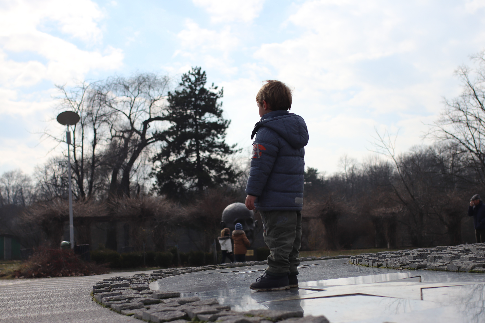

26
Feb
"L’âge n’est pas un frein pour apprendre", plus ou moins faux
Quand on est bébé, on apprend à parler les langues natales sans aucune règle. Ce serait génial de pouvoir apprendre une langue sans avoir besoin de passer pour la grammaire, surtout que quand on entend le mot "grammaire" c’est souvent un signe de quelque chose de compliqué…